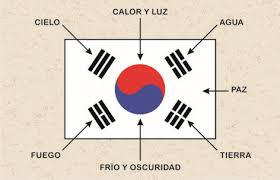
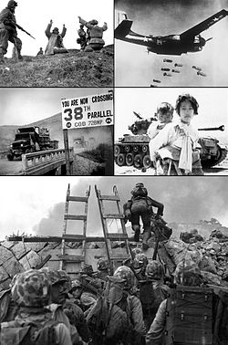

 En el idioma coreano, Corea del Sur es llamada Daehan Minguk, cuyos caracteres significan: grande; Han, nombre chino para Corea y pueblo o nación, literalmente "El gran pueblo de Han o la gran nación de Han". En su forma corta, Hanguk, "País de Han", es utilizado para referirse a Corea como un todo o también Namhan "La nación del sur", para referirse a Corea del Sur específicamente. Los norcoreanos se refieren a su vecino del sur como Namchosŏn. El nombre Han data de las antiguas Confederaciones Samhan de la era de los tres antiguos reinos de Corea. En español, así como en la mayoría de las lenguas occidentales, la nación es muchas veces referida como Corea. Esta palabra deriva de la dinastía Goryeo, la cual adoptó su nombre en referencia al aún más antiguo Reino de Koguryŏ. El nuevo nombre oficial tiene su origen en el antiguo país de Gojoseon (Old Joseon). En 1897, la dinastía Joseon cambió el nombre oficial del país de Joseon a Daehan Jeguk (Imperio Coreano). El nombre Daehan (Gran Han) deriva de Samhan (Tres Han), que se refiere a los Tres Reinos de Corea, no a las antiguas confederaciones en el sur de la península de Corea.
 Los primeros restos humanos hallados en Corea datan de alrededor de 500 000 años. De acuerdo a la tradición, en el año 2333 a. C. Tangun fundó el reino de Joseon16 (a menudo conocido como "Gojoseon" para evitar la confusión con la dinastía del siglo XIV del mismo nombre; el prefijo go significa "viejo" o "anterior"). Después de numerosas guerras, este reino se desintegró. La antigua Corea pasó a albergar una serie de ciudades-estado en constantes guerras, que aparecían y desaparecían de manera constante. No obstante, tres reinos, Baekje, Koguryŏ y Silla se fortalecieron y entre los tres dominaron la escena histórica de Corea por más de doscientos años, en el periodo conocido como los Tres Reinos de Corea. En el año 676, Silla logró unificar casi todo el territorio coreano, con excepción del reino de Balhae. El dominio de estos dos reinos sobre todo Corea y parte de Manchuria dio origen al Periodo de los Estados Norte y Sur. Tras su decadencia, en 918 el general Wang Geon fundó el reino de Goryeo (o Koryŏ, de donde proviene el nombre de Corea). En el siglo XIII, la invasión de los mongoles debilitó a Goryeo: después de casi treinta años de guerra, el reino conservó el dominio sobre todo el territorio de Corea, aunque en realidad sólo era un tributario más de los mongoles.